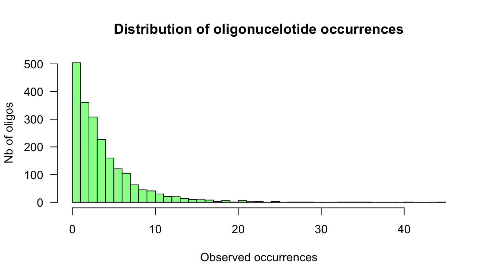

The goal of this exercise is to get an intuition of a motif discovery approach relying on the detection of over-represented oligonucleotides.
Our approach will be pragmatic.
We retrieved the upstream non-coding sequences of the genes involved in methionine biosynthesis and sulfur assimilation, and counted the occurrences of each hexanucleotide.
We also computed
We would like to know if some 6nt are over-reprsented in promoters of methionine-associated genes relative to the occurrences that would be expected from a random selection of yeast promoters.
~/LCG_BEII/practical_motif_discovery/).workdir <- "~/LCG_BEII/practical_motif_discovery"
dir.create(workdir, showWarnings = FALSE, recursive = TRUE)
setwd(workdir)oligo.url <- "http://jvanheld.github.io/LCG_BEII/practicals/motif_discovery/data/Scerevisiae_MET-genes_oligos-6nt-2str-noov_occ-freq.tsv"
oligo.file <- basename(oligo.url) ## Suppress the URL path and keep only the file name for local storage
download.file(oligo.url, destfile = oligo.file)In R, open a new script or R markdown file.
Load the data table, print the 5 top rows and the 5 bottom rows.
oligo.table <- read.delim(oligo.file, header = 1, row.names = 1)
# View(oligo.table)
head(oligo.table, n = 5) obs_freq exp_freq occ exp_occ
aaaaaa|tttttt 0.004592808 0.004896299 41 43.71
aaaaac|gttttt 0.001120197 0.001998518 10 17.84
aaaaag|cttttt 0.003696651 0.003604251 33 32.18
aaaaat|attttt 0.004032710 0.004160627 36 37.14
aaaaca|tgtttt 0.001344237 0.001932479 12 17.25tail(oligo.table, n = 5) obs_freq exp_freq occ exp_occ
ttccaa|ttggaa 0.0008961577 0.0008428396 8 7.52
ttcgaa|ttcgaa 0.0001120197 0.0003224542 1 2.88
ttgaaa|tttcaa 0.0019043352 0.0019087053 17 17.04
ttgcaa|ttgcaa 0.0001120197 0.0004030214 1 3.60
tttaaa|tttaaa 0.0005600986 0.0009379354 5 8.37x <- oligo.table$occ
range(x)[1] 0 45max.x <- max(x)
hist(x, breaks = 0:max.x, col = "palegreen",
xlab = "Observed occurrences",
ylab = "Nb of oligos",
las = 1,
main = "Distribution of oligonucelotide occurrences")
exp.occ <- oligo.table$exp_occ
plot(exp.occ, x, col = "grey", las = 1,
xlab = "Expected occurrences",
ylab = "Observed occurrences",
main = "Observed vs expected occurrences")
grid()
abline(a = 0, b = 1, col = "black")
abline(h = 0, col = "black")
abline(v = 0, col = "black")
abline(a = 0, b = 2, col = "brown")Scatter plot of observed versus expected occurrences. The black diagonal corresponds to the null hypothesis, the brown line denotes an arbitrary threshold on fold-change > 2.
\[lr = log(x/<X>)\]
\[llr = f \cdot log(x/<X>)\]
\[P = T(X \ge x)\]
Draw an histogram with the P-values of all hexanucleotides, with 20 bins.
Draw a scatter plot with the P-value (Y) as a function of the log-ratio (X).
Compute the E-value, and the significance.
\[E = P \cdot N\] \[sig = -log_{10}(E)\]
Draw a Volcano plot, with the significance as a function of the log-ratio.
Compute the P-value using the Poisson distribution as approximation of the binomial. Are we in suitable conditions for this approximation ? Draw a plot comparing the P-values obtained by the binomial and Poisson distributions.
Compute the P-value using a normal approximation of the binomial distribution.